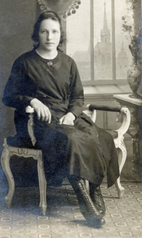
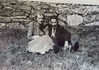

Iver Kristian Vedø
M, #93101, f. 1 februar 1870, d. 14 juli 1957
Foreldre
Biografi
Iver Kristian Vedø ble født den 1 februar 1870 på/i Vedø 54/1, Vedøy, Fosnes, Nord-Trøndelag. Han giftet seg med
Julie Alette Andersdatter den 10 november 1891 på/i Vik kirke, Fosnes, Nord-Trøndelag. Han døde den 14 juli 1957 på/i Fosnes, Nord-Trøndelag. Han ble gravlagt på/i Dun kirkegård, Jøa, Namsos, Trøndelag.
| Sist redigert |
20 februar 2023 16:44:24 |
Julie Alette Andersdatter
K, #93102, f. 7 desember 1867, d. 20 november 1952
Foreldre
Biografi
Julie Alette Andersdatter ble født den 7 desember 1867. Hun giftet seg med
Iver Kristian Vedø den 10 november 1891 på/i Vik kirke, Fosnes, Nord-Trøndelag. Hun døde den 20 november 1952 på/i Fosnes, Nord-Trøndelag. Hun ble gravlagt på/i Dun kirkegård, Jøa, Namsos, Trøndelag.
Julie Alette Andersdatter was also known as Julie Vedø.
| Sist redigert |
20 februar 2023 16:49:38 |
Malena Sevaldsdatter Andvik
K, #93103, f. 29 mars 1830, d. 1915
Foreldre
Biografi
Malena Sevaldsdatter Andvik ble født den 29 mars 1830 på/i Brikselli, Fosnes, Nord-Trøndelag. Hun giftet seg med
Lars Simonsen Helsøy den 10 oktober 1858 på/i Vemundvik, Nord-Trøndelag. Hun døde i 1915.
Malena Sevaldsdatter Andvik was also known as Malena Helsøy.
| Sist redigert |
4 mai 2021 00:00:00 |
Kristoffer Olfred Strandli
M, #93104, f. 3 mai 1894, d. 8 juli 1958
Biografi
Kristoffer Olfred Strandli ble født den 3 mai 1894 på/i Klinga, Namsos, Nord-Trøndelag. Han giftet seg med
Målfrid Brikselli den 1 desember 1916 på/i Klinga, Namsos, Nord-Trøndelag. Han døde den 8 juli 1958 på/i Klinga, Namsos, Nord-Trøndelag.
| Sist redigert |
4 mai 2021 00:00:00 |
Målfrid Brikselli
K, #93105, f. 4 november 1895, d. 8 mars 1977
Foreldre
Biografi
Målfrid Brikselli ble født den 4 november 1895 på/i Fosnes, Nord-Trøndelag. Hun giftet seg med
Kristoffer Olfred Strandli den 1 desember 1916 på/i Klinga, Namsos, Nord-Trøndelag. Hun døde den 8 mars 1977 på/i Namsos, Nord-Trøndelag.
Målfrid Brikselli was also known as Målfrid Strandli.
| Sist redigert |
4 mai 2021 00:00:00 |
Ole Ingebrigtsen Oldervik
M, #93106, f. 1836
Biografi
Ole Ingebrigtsen Oldervik ble født i 1836 på/i Furre, Overhalla, Nord-Trøndelag. Han giftet seg med
Anne Johanne Iversdatter før 1902.
| Sist redigert |
4 mai 2021 00:00:00 |
Olga Kristine Trana
K, #93107, f. 21 februar 1882
Foreldre
| Sønn | Arne Hojem+ (f. 16 august 1924, d. 24 desember 1989) |
Biografi
Olga Kristine Trana ble født den 21 februar 1882 på/i Bårdsenget, Vemundvik, Nord-Trøndelag. Hun giftet seg med
Ole Edvard Hojem den 12 april 1906 på/i Namsos, Nord-Trøndelag.
Olga Kristine Trana was also known as Olga Kristine Hojem. Hun ble døpt den 1 mai 1882 på/i Vemundvik kirke, Vemundvik, Nord-Trøndelag. Hun ble konfirmert den 27 mai 1897 på/i Namsos, Nord-Trøndelag. Hun bodde på/i Haavikveien, Namsos, Nord-Trøndelag.
| Sist redigert |
4 mai 2021 00:00:00 |
Ole Edvard Hojem
M, #93108, f. 3 desember 1876
| Sønn | Arne Hojem+ (f. 16 august 1924, d. 24 desember 1989) |
Biografi
Ole Edvard Hojem ble født den 3 desember 1876 på/i Namsos, Nord-Trøndelag. Han giftet seg med
Olga Kristine Trana den 12 april 1906 på/i Namsos, Nord-Trøndelag.
| Sist redigert |
4 mai 2021 00:00:00 |
Ole Kristiansen
M, #93109, f. omtrent 1852
Biografi
Ole Kristiansen ble født omtrent 1852 på/i Tranabakkan, Steinkjer, Nord-Trøndelag. Han giftet seg med
Karoline Margrethe Olsen på/i Namsos, Nord-Trøndelag.
Ole Kristiansen was also known as Ole Bakken.
| Sist redigert |
4 mai 2021 00:00:00 |
Karoline Margrethe Olsen
K, #93110, f. 24 november 1851
Foreldre
Biografi
Karoline Margrethe Olsen ble født den 24 november 1851 på/i Vikna, Nord-Trøndelag. Hun giftet seg med
Ole Kristiansen på/i Namsos, Nord-Trøndelag.
Karoline Margrethe Olsen ble døpt den 1 januar 1852.
| Sist redigert |
4 mai 2021 00:00:00 |
Ole Zachariassen
M, #93111, f. før 1830
Biografi
| Sist redigert |
4 mai 2021 00:00:00 |
Christine Dorthea Christiansdatter
K, #93112, f. før 1830
Biografi
Christine Dorthea Christiansdatter ble født før 1830. Hun giftet seg med
Ole Zachariassen.
Christine Dorthea Christiansdatter bodde i 1864 på/i Ryum, Vikna, Nord-Trøndelag.
| Sist redigert |
4 mai 2021 00:00:00 |
Anders
M, #93122, f. før 1850
Biografi
Anders ble født før 1850.
| Sist redigert |
5 mai 2021 00:00:00 |
Alf Reidar Lien
M, #93123, f. 5 september 1903, d. 6 juli 2003
Foreldre
Familie: Gisken Sofie Foss (f. 26 mars 1906, d. 20 mars 1990)
| Datter | Reidun Lien+ (f. 23 august 1930, d. 9 september 2012) |
| Sønn | Bjørnar Foss Lien+ (f. 16 desember 1938) |
| Sønn | Kjell Oddbjørn Lien+ (f. 17 desember 1945) |
Biografi
Alf Reidar Lien ble født den 5 september 1903 på/i Vemundvik, Nord-Trøndelag. Han giftet seg med
Gisken Sofie Foss den 24 april 1930. Han døde den 6 juli 2003 på/i Namsos, Nord-Trøndelag. Han ble gravlagt den 15 juli 2003 på/i Vemundvik kirkegård, Namsos, Nord-Trøndelag.
Alf Reidar Lien eide Røbergvik 6/6, Lødding, Vemundvik, Nord-Trøndelag.
| Sist redigert |
9 mai 2021 00:00:00 |
| Slektskap | 3-menning 1 gang forskjøvet til Lovise Julie Eggan |
Gisken Sofie Foss
K, #93124, f. 26 mars 1906, d. 20 mars 1990
Foreldre
Familie: Alf Reidar Lien (f. 5 september 1903, d. 6 juli 2003)
| Datter | Reidun Lien+ (f. 23 august 1930, d. 9 september 2012) |
| Sønn | Bjørnar Foss Lien+ (f. 16 desember 1938) |
| Sønn | Kjell Oddbjørn Lien+ (f. 17 desember 1945) |

Gisken Sofie Foss som konfirma
Biografi
Gisken Sofie Foss ble født den 26 mars 1906 på/i Vemundvik, Nord-Trøndelag. Hun giftet seg med
Alf Reidar Lien den 24 april 1930. Hun døde den 20 mars 1990 på/i Namsos, Nord-Trøndelag. Hun ble gravlagt den 23 mars 1990 på/i Vemundvik kirkegård, Namsos, Nord-Trøndelag.
Gisken Sofie Foss was also known as Gisken Sofie Lien.
| Sist redigert |
19 august 2024 10:46:50 |
Reidun Lien
K, #93125, f. 23 august 1930, d. 9 september 2012
Foreldre
Familie: Einar Kongsmo (f. 24 desember 1928, d. 25 januar 1994)
| Datter | Kari Margrethe Kongsmo+ (f. 5 november 1947, d. 10 april 1971) |
| Sønn | Reidar Eilif Kongsmo+ (f. 17 juli 1949) |
| Datter | Anne Grethe Kongsmo+ (f. 25 desember 1963) |

Reidun og Bjørnar Lien
Biografi
Reidun Lien ble født den 23 august 1930 på/i Vemundvik, Nord-Trøndelag. Hun giftet seg med
Einar Kongsmo den 11 oktober 1947. Hun døde den 9 september 2012 på/i Namsos, Nord-Trøndelag. Hun ble gravlagt den 19 september 2012 på/i Vemundvik kirkegård, Namsos, Trøndelag.
Reidun Lien was also known as Reidun Kongsmo.
| Sist redigert |
19 september 2021 00:00:00 |
| Slektskap | 4-menning til Lovise Julie Eggan |
{kind=link}
{kind=link}